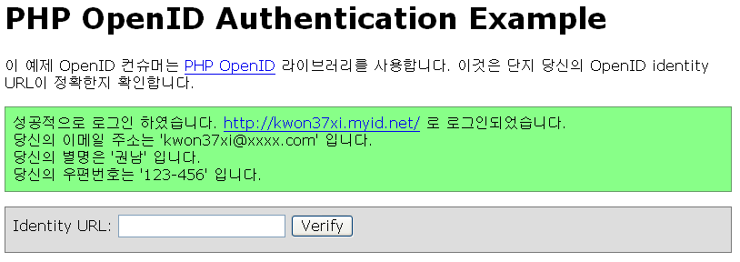
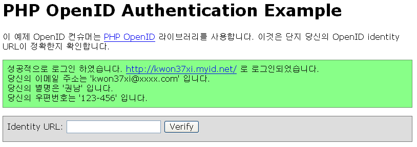

이번에 Openmaru Studio에서 myid.net을 오픈했다. myid.net은 OpenID 인증 제공자이다.
OpenID는 한개의 ID로 여러 서로 다른 서비스에 로그인 하자! 라는 모토로 만들어진 공개 표준이다.
이에 관해서는 OpenID 한국어 공식 홈페이지와 OpenID 한국 사용자 모임 등을 참조해보면 된다.
이미 WordPress 와 TatterTools(비공식) 등의 설치형 블로그 들이 OpenID를 플러그인으로 지원하고 있다.
자신이 만들고 있는 오픈 소스 웹 어플리케이션에서 Open ID로 사용자가 로그인 할 수 있도록 인증하고 싶은 분들이 틀림없이 있을 것이라 생각한다. 또한, 많은 분들이 자신의 웹 애플리케이션에 OpenID 인증을 허용했으면 하고 바란다.
이번에 내 자신이 OpenID 인증 기능을 붙여야 했기 때문에, 이에 관한 사항을 정리했다.
아래는 PHP용 OpenID 인증 라이브러리에 있는 라이브러리 사용 예의 주석을 한국어로 옮기고, 몇가지를 덧 붙인 것이다. 아래 예제를 깔고 자신의 OpenID로 인증을 직접 실행해 볼 수 있다.
실행 순서는 index.php -> try_auth.php -> OpenID 인증서버 -> finish_auth.php -> index.php 이다. 차례대로 따라가면서 보면 쉽게 이해가 될 것이다.
* PHP OpenID Library 를 설치한다.
Windows의 경우, PHP/PEAR 설치 디렉토리에서 PEAR/Auth/OpenID/CyrptUtil.php 파일의
define('Auth_OpenID_RAND_SOURCE', '/dev/urandom');
위 부분을 찾아서 아래와 같이 바꾼다.
define('Auth_OpenID_RAND_SOURCE', NULL);

OpenID는 한개의 ID로 여러 서로 다른 서비스에 로그인 하자! 라는 모토로 만들어진 공개 표준이다.
이에 관해서는 OpenID 한국어 공식 홈페이지와 OpenID 한국 사용자 모임 등을 참조해보면 된다.
이미 WordPress 와 TatterTools(비공식) 등의 설치형 블로그 들이 OpenID를 플러그인으로 지원하고 있다.
자신이 만들고 있는 오픈 소스 웹 어플리케이션에서 Open ID로 사용자가 로그인 할 수 있도록 인증하고 싶은 분들이 틀림없이 있을 것이라 생각한다. 또한, 많은 분들이 자신의 웹 애플리케이션에 OpenID 인증을 허용했으면 하고 바란다.
이번에 내 자신이 OpenID 인증 기능을 붙여야 했기 때문에, 이에 관한 사항을 정리했다.
아래는 PHP용 OpenID 인증 라이브러리에 있는 라이브러리 사용 예의 주석을 한국어로 옮기고, 몇가지를 덧 붙인 것이다. 아래 예제를 깔고 자신의 OpenID로 인증을 직접 실행해 볼 수 있다.
실행 순서는 index.php -> try_auth.php -> OpenID 인증서버 -> finish_auth.php -> index.php 이다. 차례대로 따라가면서 보면 쉽게 이해가 될 것이다.
먼저 할 일
* PHP OpenID Library 를 설치한다.
Windows의 경우, PHP/PEAR 설치 디렉토리에서 PEAR/Auth/OpenID/CyrptUtil.php 파일의
define('Auth_OpenID_RAND_SOURCE', '/dev/urandom');
위 부분을 찾아서 아래와 같이 바꾼다.
define('Auth_OpenID_RAND_SOURCE', NULL);
common.php : 공통 부분
<?php
$path_extra = dirname(dirname(dirname(__FILE__)));
$path = ini_get('include_path');
$path = $path_extra . ':' . $path;
ini_set('include_path', $path);
/**
* Require the OpenID consumer code.
*/
/**
* OpenID 컨슈머 라이브러리 사용을 위해 필요한 라이브러리입니다.
*/
require_once "Auth/OpenID/Consumer.php";
/**
* Require the "file store" module, which we'll need to store OpenID
* information.
*/
/**
* OpenID 관련 정보를 파일 형태로 저장하기위해 필요한 모듈입니다.
*/
require_once "Auth/OpenID/FileStore.php";
/**
* This is where the example will store its OpenID information. You
* should change this path if you want the example store to be created
* elsewhere. After you're done playing with the example script,
* you'll have to remove this directory manually.
*/
/**
* OpenID 관련 정보를 저장하는 디렉토리를 지정합니다.
* 적당한 디렉토리로 변경하십시오.
*/
$store_path = "E:/AutoSet/public_html/consumer/_php_consumer_test";
/**
* 위 디렉토리가 존재하는지 확인하고, 존재하지 않으면 디렉토리를
* 생성합니다.
*/
if (!file_exists($store_path) &&
!mkdir($store_path)) {
print "Could not create the FileStore directory '$store_path'. ".
" Please check the effective permissions.";
exit(0);
}
/**
* 정보 저장소에 관련한 객체를 생성합니다.
*/
$store = new Auth_OpenID_FileStore($store_path);
/**
* 정보 저장소 객체를 이용해서 컨슈머 객체를 생성합니다.
* 이 객체를 try_auth.php와 finish_auth.php 에서 사용합니다.
*/
$consumer = new Auth_OpenID_Consumer($store);
?>
index.php : 사용자 OpenID 입력/결과 화면
<?php
# 한글이 깨지면 다음 부분을 euc-kr로 변경하세요.
header("Content-type: text/html; charset=utf-8");
?>
<html>
<head><title>PHP OpenID Authentication Example</title></head>
<style type="text/css">
* {
font-family: verdana,sans-serif;
}
body {
width: 50em;
margin: 1em;
}
div {
padding: .5em;
}
table {
margin: none;
padding: none;
}
.alert {
border: 1px solid #e7dc2b;
background: #fff888;
}
.success {
border: 1px solid #669966;
background: #88ff88;
}
.error {
border: 1px solid #ff0000;
background: #ffaaaa;
}
#verify-form {
border: 1px solid #777777;
background: #dddddd;
margin-top: 1em;
padding-bottom: 0em;
}
</style>
<body>
<h1>PHP OpenID Authentication Example</h1>
<p>
이 예제 OpenID 컨슈머는 <a
href="http://www.openidenabled.com/openid/libraries/php/">PHP
OpenID</a> 라이브러리를 사용합니다.
이것은 단지 당신의 OpenID identity URL이 정확한지 확인합니다.
</p>
<?php if (isset($msg)) { print "<div class=\"alert\">$msg</div>"; } ?>
<?php if (isset($error)) { print "<div class=\"error\">$error</div>"; } ?>
<?php if (isset($success)) { print "<div class=\"success\">$success</div>"; } ?>
<div id="verify-form">
<form method="get" action="try_auth.php">
Identity URL:
<input type="hidden" name="action" value="verify" />
<input type="text" name="openid_url" value="" />
<input type="submit" value="Verify" />
</form>
</div>
</body>
</html>
try_auth.php : 사용자가 입력한 OpenID를 인증 서버로 전송하여 인증 요청
<?php
# 초기화 관련 common.php를 읽어들입니다.
require_once "common.php";
# 세션을 시작합니다.
session_start();
# 사용자가 자신의 OpenID 를 입력했는지 확인합니다.
if (empty($_GET['openid_url'])) {
$error = "Expected an OpenID URL.";
include 'index.php';
exit(0);
}
# http/https 여부를 확인합니다.
$scheme = 'http';
if (isset($_SERVER['HTTPS']) and $_SERVER['HTTPS'] == 'on') {
$scheme .= 's';
}
$openid = $_GET['openid_url'];
# OpenID Provider(http://www.myid.net 등)이 로그인 후
# 관련 정보를 돌려줄 URL을 생성합니다.
# 이 역할은 finish_auth.php 가 맡습니다.
$process_url = sprintf("$scheme://%s:%s%s/finish_auth.php",
$_SERVER['SERVER_NAME'], $_SERVER['SERVER_PORT'],
dirname($_SERVER['PHP_SELF']));
# Trust Root는 OpenID로 인증할 서버의 범위를 지정합니다.
# 현재 예제 프로그램이 http://localhost/consumer 에서 실행된다면,
# http://localhost/consumer 까지 인증 범위로 지정합니다.
$trust_root = sprintf("$scheme://%s:%s%s",
$_SERVER['SERVER_NAME'], $_SERVER['SERVER_PORT'],
dirname($_SERVER['PHP_SELF']));
# OpenID 인증 작업을 시작합니다.
$auth_request = $consumer->begin($openid);
# 인증 요청의 객체가 잘 생성 되었는지 확인합니다.
if (!$auth_request) {
$error = "Authentication error.";
include 'index.php';
exit(0);
}
# 인증 서버로부터 사용자의 부가 정보를 받아오도록 설정한다.
# 여기에서 별명이나 이메일 주소 등을 받을 수 있다.
# 자세한 정보 : http://www.openidenabled.com/openid/simple-registration-extension
#
# 첫 번째 인자 : "sreg"
# 두 번째 인자 : "optional" - 선택 입력 항목, 혹은 "required" - 필수 입력 항목
# 세번째 인자 : 원하는 키를 email,nickname 과 같은 식으로 나열한다.
$auth_request->addExtensionArg('sreg', 'required', 'nickname,email');
$auth_request->addExtensionArg('sreg', 'optional', 'postcode');
// Redirect the user to the OpenID server for authentication. Store
// the token for this authentication so we can verify the response.
# OpenID 서버로 사용자를 Redirect 시킨다.
# 이 때 토큰을 저장하여, Consumer가 요청한 서버로부터
# (나중에) 응답이 제대로 왔는지 확인한다.
$redirect_url = $auth_request->redirectURL($trust_root,
$process_url);
# 실제 Redirection이 일어난다.
# 여기서 var_dump($redirect_url); 를 실행해 보면 OpenID 인증 서버로 이동하는 주소를
# 확인할 수 있다.
header("Location: ".$redirect_url);
?>
finish_auth.php : OpenID 인증 완료 -> index.php로 간다
<?php
# 초기화 관련 common.php를 읽어들입니다.
require_once "common.php";
session_start();
// OpenID 서버의 응답을 받아서 인증 과정을 마무리합니다.
$response = $consumer->complete($_GET);
if ($response->status == Auth_OpenID_CANCEL) {
# 인증이 취소 되었습니다.
$msg = '인증이 취소되었습니다.';
} else if ($response->status == Auth_OpenID_FAILURE) {
# 인증이 실패하였습니다.
$msg = "인증이 실패하였습니다 : " . $response->message;
} else if ($response->status == Auth_OpenID_SUCCESS) {
# 인증이 성공한 이후의 과정을 수행합니다.
# 사용자의 OpenID를 가져옵니다.
$openid = $response->identity_url;
# 특수 문자를 제거하여 화면상에 출력 시킵니다.
$esc_identity = htmlspecialchars($openid, ENT_QUOTES);
$success = sprintf('성공적으로 로그인 하였습니다. ' .
'<a href="%s">%s</a> 로 로그인되었습니다.<br />',
$esc_identity, $esc_identity);
# 뭘까요? 알아맞춰보세요~ ㅜㅜ
if ($response->endpoint->canonicalID) {
$success .= ' (XRI CanonicalID: '.$response->endpoint->canonicalID.') <br />';
}
# 사용자에 대한 부가 정보 요청한 것을 확인합니다.
$sreg = $response->extensionResponse('sreg');
if (@$sreg['email']) {
$success .= " 당신의 이메일 주소는 '".$sreg['email']."' 입니다.<br />";
}
if (@$sreg['nickname']) {
$success .= " 당신의 별명은 '".$sreg['nickname']."' 입니다.<br />";
}
if (@$sreg['postcode']) {
$success .= " 당신의 우편번호는 '".$sreg['postcode']."' 입니다.<br />";
}
}
include 'index.php';
?>
인증 완료 후 화면
